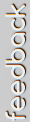

Mosaic Machine is a photowall that provides a unique way to view your friends and your connections to them. It allows you to filter facebook photos based on data from your friends. We do not store any of your personal information. Please click 'See Your Mosaic' below in order to start using Mosaic Machine. You'll be asked to login to facebook and review permissions.
See Your Mosaic
